Asalariados analizados
288,241
R² ingreso · mejor modelo
0.605
R² horas · mejor modelo
0.245
Ingreso por año de estudio
+2.8 %
Se modelan a la vez dos variables de los asalariados peruanos (ENAHO 2014–2025, 288,241 personas) con las mismas 19 predictoras:
- Y1: logaritmo del ingreso mensual.
- Y2: horas trabajadas por semana.
Se compararon tres modelos (lineal, Elastic Net y Random Forest), entrenados con el 80 % de los datos y evaluados con el 20 % restante.
Hallazgos principales- El Random Forest es el mejor modelo para las dos variables.
- El ingreso se predice bien: el modelo explica el 60 % de su variación.
- Las horas se predicen poco (25 %): dependen de turnos, temporadas y decisiones personales que la encuesta no registra.
- La educación es la variable con mayor efecto conjunto sobre ingreso y horas.
- A igualdad de las demás características, las mujeres ganan 19 % menos que los hombres.
Use las pestañas superiores para ver el detalle de los modelos, la interpretación y los datos.
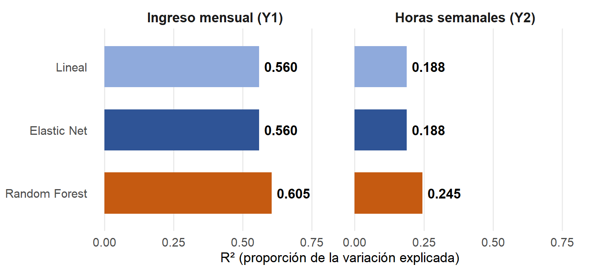
Interpretación. Un R² de 0.60 significa que el modelo explica el 60 % de las diferencias de ingreso entre trabajadores; en las horas solo explica el 25 %. El Random Forest mejora al modelo lineal en 0.045 puntos de R² en el ingreso y en 0.057 en las horas, porque capta relaciones no lineales e interacciones entre las predictoras.
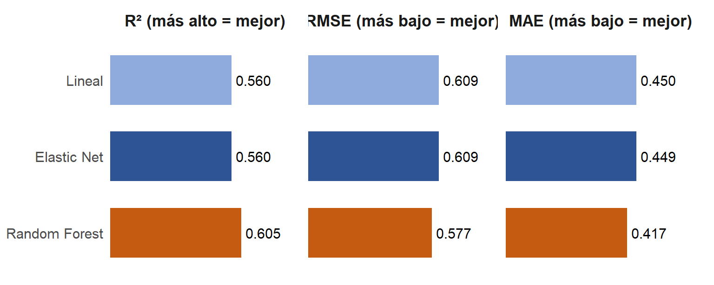
Interpretación. Los tres modelos tienen errores parecidos, pero el Random Forest es el que menos se equivoca. Como Y1 está en logaritmos, un MAE de 0.42 quiere decir que el ingreso predicho suele diferir del real en un factor de alrededor de 1.5 (por encima o por debajo). El modelo lineal y el Elastic Net dan prácticamente lo mismo: con casi 300 mil casos, la regularización no cambia los coeficientes.
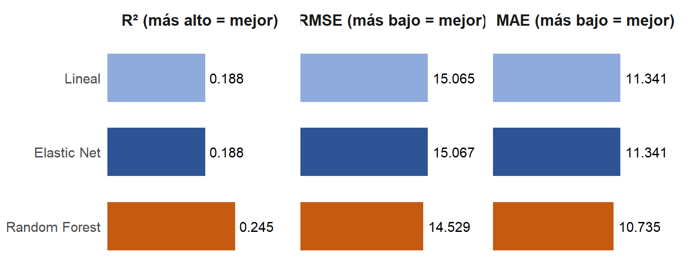
Interpretación. En las horas el error típico es de unas 10.7 horas por semana (MAE) con el mejor modelo, frente a una jornada promedio de 42 horas. Las características del trabajador y del empleo explican poco cuántas horas trabaja cada persona, por eso el R² es bajo en los tres modelos.
| Variable objetivo | Modelo | R² validación cruzada | R² prueba | RMSE prueba | MAE prueba |
|---|---|---|---|---|---|
| Ingreso mensual (Y1) | Random Forest ★ | 0.591 | 0.605 | 0.577 | 0.417 |
| Ingreso mensual (Y1) | Lineal | 0.556 | 0.560 | 0.609 | 0.450 |
| Ingreso mensual (Y1) | Elastic Net | 0.555 | 0.560 | 0.609 | 0.449 |
| Horas semanales (Y2) | Random Forest ★ | 0.239 | 0.245 | 14.529 | 10.735 |
| Horas semanales (Y2) | Lineal | 0.190 | 0.188 | 15.065 | 11.341 |
| Horas semanales (Y2) | Elastic Net | 0.190 | 0.188 | 15.067 | 11.341 |
Interpretación. ★ marca el mejor modelo de cada variable. Los R² de la validación cruzada y de la prueba se diferencian como máximo en 0.013: los modelos rinden igual con datos que no vieron al entrenarse, es decir, no hay sobreajuste.
- R²: proporción de la variación que explica el modelo, entre 0 y 1. Más alto es mejor.
- RMSE: error típico de la predicción; castiga más los errores grandes. Más bajo es mejor.
- MAE: error absoluto promedio. Más bajo es mejor.
- En Y1 el RMSE y el MAE están en logaritmos del ingreso; en Y2, en horas por semana.
- Validación cruzada: el entrenamiento se divide en 5 partes y el modelo se evalúa 5 veces. Prueba: 20 % de los datos que el modelo nunca vio.
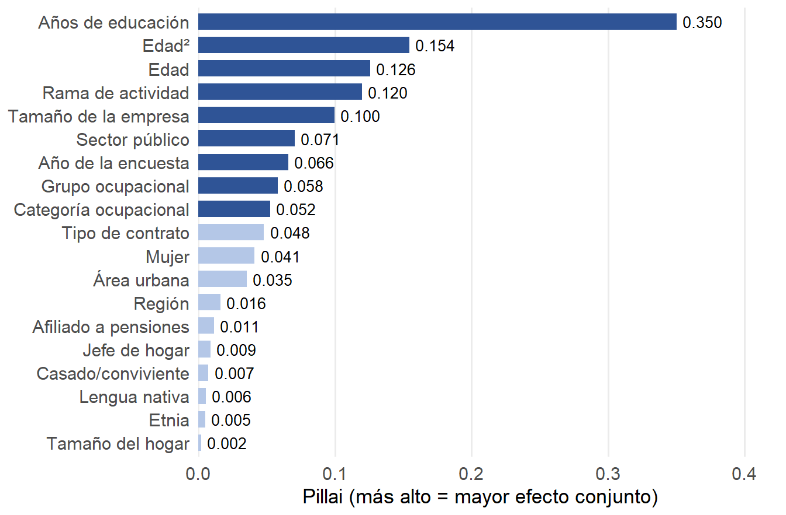
Interpretación. La prueba de Pillai mide cuánto influye cada predictora en el ingreso y las horas a la vez. Destacan Años de educación (0.350), Edad² y Edad. En azul claro, efectos pequeños (< 0.05). Todas salen significativas porque la muestra es muy grande, así que importa el tamaño del Pillai, no el p-valor. La prueba es secuencial: cada valor depende del orden en que la variable entra al modelo.
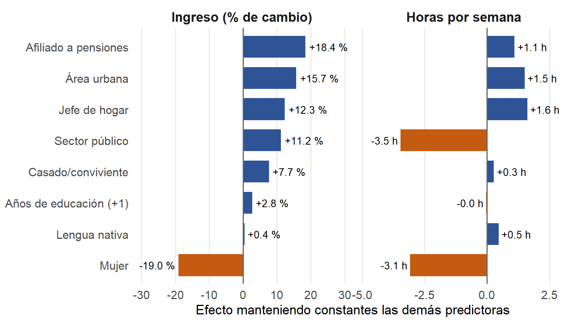
Interpretación (azul = aumenta, naranja = disminuye):
- Educación: cada año adicional de estudio se asocia con un ingreso 2.8 % mayor y 0.04 horas semanales menos. El efecto es menor que en una ecuación de Mincer simple porque el modelo ya controla la ocupación, la rama y el tamaño de la empresa, que en parte dependen de la educación.
- Mujer: gana 19.0 % menos y trabaja 3.1 horas menos por semana que un hombre con las mismas características.
- Sector público: +11.2 % de ingreso y -3.5 horas por semana. Afiliación a pensiones (empleo formal): +18.4 % de ingreso.
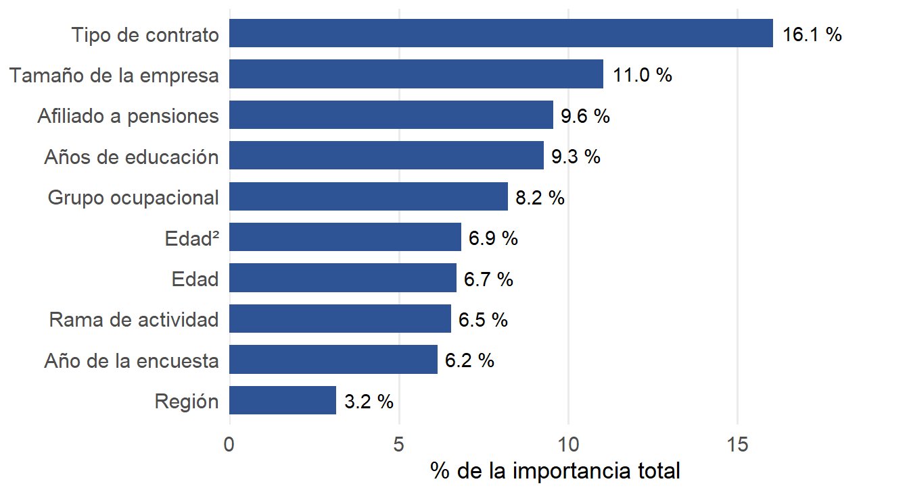
Interpretación. Para predecir el ingreso, el Random Forest se apoya sobre todo en Tipo de contrato (16.1 % de la importancia), seguida de Tamaño de la empresa y Afiliado a pensiones. Las variables de una misma categoría (por ejemplo, todas las ramas de actividad) se suman en una sola barra.
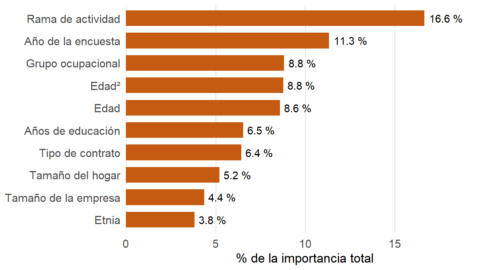
Interpretación. Para las horas, las más importantes son Rama de actividad (16.6 %), Año de la encuesta y Grupo ocupacional. La importancia indica qué variables usa más el modelo, no si aumentan o reducen las horas; la dirección del efecto se ve en el gráfico de coeficientes.
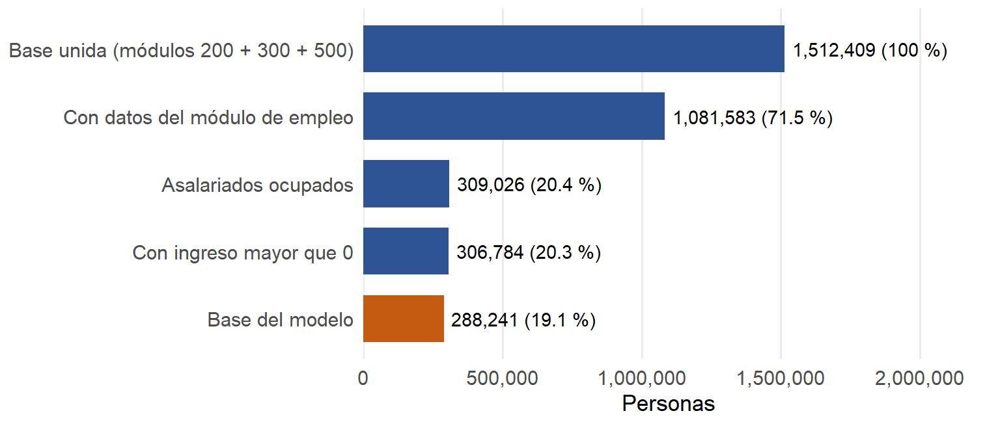
Interpretación. De 1,512,409 registros de la ENAHO unida quedan 288,241 asalariados (19.1 %). La mayor reducción se debe a que el estudio solo considera a los asalariados ocupados; después solo se excluyen los casos sin ingreso y los faltantes reales.
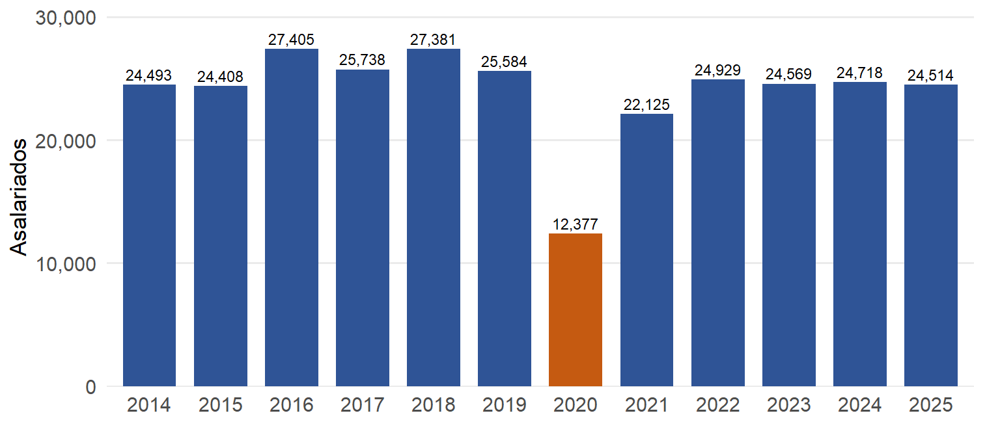
Interpretación. Cada año aporta entre 22,125 y 27,405 asalariados. En 2020 solo hay 12,377: por la pandemia, la ENAHO se hizo en parte por teléfono con un cuestionario reducido, y muchos registros no tienen el tipo de contrato, por lo que se eliminaron.
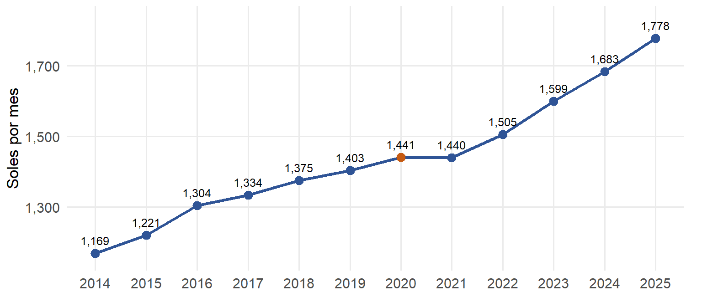
Interpretación. El ingreso mensual promedio de los asalariados pasa de S/ 1,169 en 2014 a S/ 1,778 en 2025, un aumento de 52 %. Por esta tendencia el año de la encuesta se incluye como predictora.
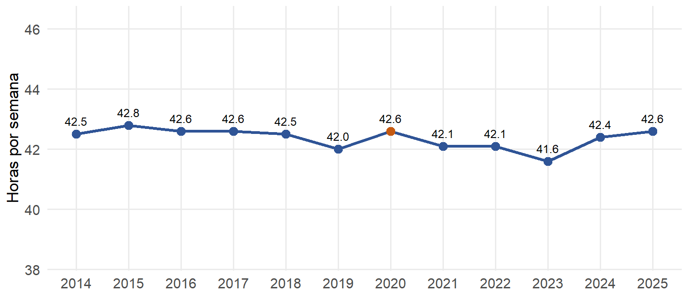
Interpretación. Las horas son casi constantes: entre 41.6 y 42.8 horas por semana en todo el periodo (el eje muestra ±4 horas alrededor del promedio para no exagerar las variaciones). Esto es coherente con el bajo R² de Y2: las horas varían más entre personas que entre años.
| Año | Asalariados | % del total | Ingreso mensual promedio (S/) | Horas semanales promedio |
|---|---|---|---|---|
| 2014 | 24,493 | 8.5 % | 1,169 | 42.5 |
| 2015 | 24,408 | 8.5 % | 1,221 | 42.8 |
| 2016 | 27,405 | 9.5 % | 1,304 | 42.6 |
| 2017 | 25,738 | 8.9 % | 1,334 | 42.6 |
| 2018 | 27,381 | 9.5 % | 1,375 | 42.5 |
| 2019 | 25,584 | 8.9 % | 1,403 | 42.0 |
| 2020 | 12,377 | 4.3 % | 1,441 | 42.6 |
| 2021 | 22,125 | 7.7 % | 1,440 | 42.1 |
| 2022 | 24,929 | 8.6 % | 1,505 | 42.1 |
| 2023 | 24,569 | 8.5 % | 1,599 | 41.6 |
| 2024 | 24,718 | 8.6 % | 1,683 | 42.4 |
| 2025 | 24,514 | 8.5 % | 1,778 | 42.6 |